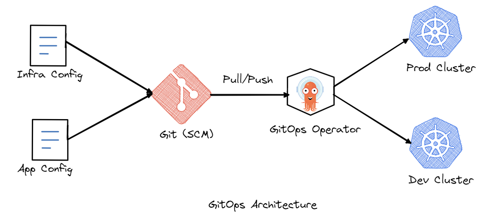
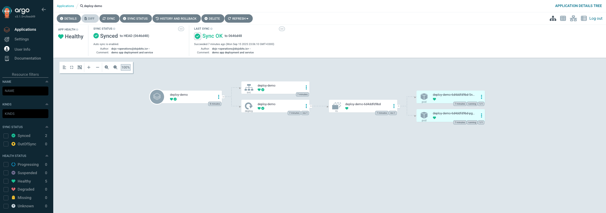
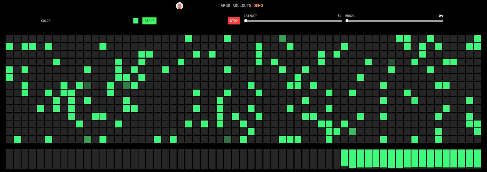
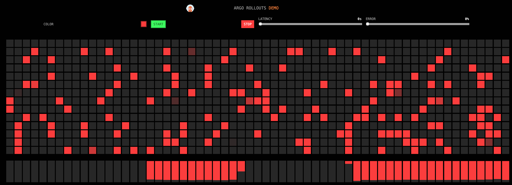
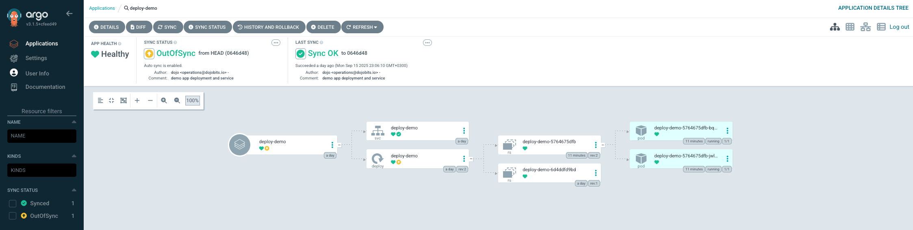
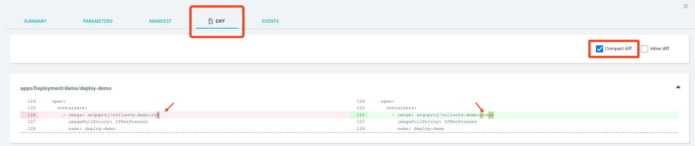

GitOps is a powerful approach for using Git as a single source of truth for managing both application and infrastructure configurations. GitOps is a specialized methodology within the broader DevOps cultural and technical philosophy, and brings several key benefits:
Repeatability: Every deployment or configuration is versioned in Git, making
environments easy to reproduce or redeploy.
Traceability: Every change is tracked and documented as a commit, enabling
audits and clear visibility into who made what change and when.
Audit and Rollback: Since changes are version-controlled, rolling back to a
stable state is as simple as reverting a Git commit, making rollbacks secure
and fast.
Through Git-driven workflows, GitOps provides automation and reliability, especially for modern cloud environments. Unlike traditional administration approaches—where configuration changes are applied directly to the Kubernetes environment — in GitOps every intended change is made via commits to Git, and only then is it reflected in the cluster.
ArgoCD implements GitOps practices by continuously monitoring Git repositories through a combination of periodic polling and webhooks. It automatically detects changes and syncs those changes to the Kubernetes infrastructure. When a configuration or application update is pushed to Git, ArgoCD ensures the live cluster matches what’s described in Git, without requiring manual intervention, thus enabling consistent, secure, and auditable operations.
Throughout this workshop, we'll see in practice how to build a simple infrastructure based on Git, Kubernetes, and ArgoCD, and how to implement these principles hands-on.
The list of prerequisites to complete the workshop are:
[!Note] No matter whether you are using Linux, Mac OS, or Windows, they all come with a built-in SSH client in the terminal!
The remote lab (hands-on) environment is a virtual machine deployed in the cloud and is based on Ubuntu Linux 24.04 LTS. It is only accessible over SSH.
The SSH session authentication will be based on the username: ubuntu
and an SSH key that will be shared with you at the beginning of the event.
[!Note] Please don't change the default credentials!
[!Warning] The handson machines are short-lived and will be destroyed immediately after the end of the event. Please don't store any important or sensitive data on them!
[!Warning] Please don't reboot your hands-on VM as this will change its IP address.
The hands-on machine credentials are:
ubuntuubuntuThe built-in user ubuntu has regular user privileges. It is a member of the
sudoers group, and in case you need to elevate your privileges, you can use the
sudo command.
Due to security concerns, SSH requires the private key file permissions to be set
to 400 (read-only for the owner). Let's do that first:
user@workstation:~$ chmod 400 key.pem
[!Note] If you don't change the key permissions, the OpenSSH client might refuse it with a warning:
@@@@@@@@@@@@@@@@@@@@@@@@@@@@@@@@@@@@@@@@@@@@@@@@@@@@@@@@@@
@ WARNING: UNPROTECTED PRIVATE KEY FILE! @
@@@@@@@@@@@@@@@@@@@@@@@@@@@@@@@@@@@@@@@@@@@@@@@@@@@@@@@@@@
Next, let's log in to our dedicated hands-on machine using an OpenSSH client:
user@workstation:~$ ssh -i key.pem ubuntu@<hands.on.machine.ip>
~$
In this task, we'll do the initial environment setup:
To complete the workshop exercises, we'll need a working Docker CE and a Kubernetes cluster.
Docker CE is an open-source platform that allows us to develop, ship, and run applications in containers — lightweight, portable units that encapsulate everything an application needs to run. It will enable us to create a consistent environment for running our git server - Gogs separate from our Kubernetes cluster.
To automate the installation of Docker and Kubernetes, which are not our main focus in this hands-on, we'll use a shell script.
[!Warning] Using shell scripts from third parties might be dangerous! Please take a moment to review the script content before executing it!
wget https://raw.githubusercontent.com/DojoBits/Toolbox/main/k8s-up.sh
Inspect the script:
less k8s-up.sh
Then, if everything looks good, let's execute it:
chmod +x k8s-up.sh
sudo ./k8s-up.sh
[!Note] The script execution might take a few minutes, depending on the machine and internet connection speed.
When execution is finished, you'll see:
...
[INFO] Removing the control‑plane NoSchedule taint...
node/db-lab-110 untainted
[INFO] All done! üéâ
~$
Now we have a fully functional single-node Kubernetes cluster!
Let's quickly validate that the kubernetes (k8s) cluster is up and running.
[!Note] It may take a few seconds for the cluster status to become
Ready:
kubectl get node
NAME STATUS ROLES AGE VERSION
db-lab-110 Ready control-plane 34m v1.34.1
~$
After the installation script has completed, we should have a working Docker engine. Let's check it out:
~$ sudo docker --version
If everything works, we should see the Docker version information.
Docker version 28.4.0, build d8eb465
Now, let's check for any running containers:
docker ps
permission denied while trying to connect to the Docker daemon socket at unix:///var/run/docker.sock: Get "http://%2Fvar%2Frun%2Fdocker.sock/v1.47/containers/json": dial unix /var/run/docker.sock: connect: permission denied
~$
We've got a permission error because we use the Docker CLI client as a regular, unprivileged user.
To fix that, we could either run the Docker CLI client with sudo every time, or
add our linux user to the docker user group:
sudo usermod -aG docker $(whoami)
To apply this configuration change, we have to log out and log back in into our shell session, but we can use a small trick to work around that.
We will change our primary group to the docker group and then change it back to our initial group.
[!Note] This is not a permanent change, and it affects only our current session.
newgrp docker
groups
Output:
docker adm cdrom sudo dip plugdev lxd ubuntu
~$
Let's test again:
docker ps
CONTAINER ID IMAGE COMMAND CREATED STATUS PORTS NAMES
~$
If that workaround doesn't work for you, please try to log out and back in to apply the group change.
To demonstrate the git principles, we'll need a git server. To avoid third-party dependencies, we'll quickly install our own open source server: Gogs.
"Gogs is a lightweight, self-hosted Git server written in Go, designed for painless installation and minimal resource usage. It lets individuals and teams run their own Git repositories with features like user dashboards, access control, and webhooks, all on their own hardware or private cloud."
To automate the installation of Gogs, which is again not our main focus in this hands-on, we'll use another shell script.
[!Warning] Using shell scripts from third parties might be dangerous! Please take a moment to review the script content before executing it!
wget https://raw.githubusercontent.com/DojoBits/Toolbox/main/gogs-up.sh
Inspect the script:
less gogs-up.sh
If everything looks good, execute the script to deploy our git server:
chmod +x gogs-up.sh
./gogs-up.sh
[!Note] The script execution might take a few minutes, depending on the machine and internet connection speed.
[!Note] The password is dynamically generated during setup. Please write it down so you don't lose it.
[+] Running 1/1
✔ Container gogs Started 0.5s
⏳ Waiting for Gogs to start (up to 10s)…
Gogs is up! ✅
Gogs is ready! üéâ
URL : http://localhost:3000/
admin : dojo
password : hTenr4rPpTTF
(you can change the password later via the UI)
~$
Done! Gogs has a built-in web UI which we can reach by just opening an SSH tunnel to our hands-on machine:
ssh -i ~/key.pem -L 2222:localhost:2222 -L 3000:localhost:3000 ubuntu@<hands.on.ip.addr>
and then using the url: http://localhost:3000/ in a web browser:

We'll need a git repository where we'll store our infrastructure and configurations as code. With Gogs, this is quite easy!
In the Gogs Web ui, click on the Sign in link in the upper right-hand side
corner and log-in with the credentials from the previous step.
dojoClick on the + icon, next to "My Repositories" field on the main screen:

A new screen, New Repository, will appear where we can configure our new repository
by simply typing a name: argo and then clicking on the Create Repository link.

Our repository is now ready! Write down the repository url for later:
git@localhost:dojo/argo.git
To authenticate against our git repository using an SSH key from the console, we need to create an SSH key and add it to our Gogs profile.
Generate a new SSH key and add it to the agent:
ssh-keygen -t ed25519 -C "operations@dojobits.io" -N "" -f ~/.ssh/dojo.key
ssh-add ~/.ssh/dojo.key
cat <<EOF >> ~/.ssh/config
Host localhost
HostName localhost
User git
Port 2222
IdentityFile ~/.ssh/dojo.key
IdentitiesOnly yes
EOF
Copy the content of the public key:
cat ~/.ssh/dojo.key.pub
Then register the Key in your Gogs profile:
Your Settings → "SSH Keys".Add Key, give it a label: dojo, paste the contents of your public key.Add Key to save the key.With the Git server and Kubernetes cluster up and running, we are almost ready. Next we'll install ArgoCD in our Kubernetes cluster using a Helm chart.
Let's add the ArgoCD Helm repository:
helm repo add argo https://argoproj.github.io/argo-helm
helm repo update
"argo" has been added to your repositories
Hang tight while we grab the latest from your chart repositories...
...Successfully got an update from the "argo" chart repository
Update Complete. ⎈Happy Helming!⎈
We'll use a separate Kubernetes namespace for managing the ArgoCD resources: (optionally, the NS could be created by helm as well, using --create-namespace for a quick test):
kubectl create namespace argocd
Install with sensible defaults
helm install argo-cd argo/argo-cd \
--namespace argocd \
--set server.service.type=ClusterIP
NAME: argo-cd
LAST DEPLOYED: Mon Sep 15 13:38:17 2025
NAMESPACE: argocd
STATUS: deployed
REVISION: 1
TEST SUITE: None
NOTES:
In order to access the server UI you have the following options:
1. kubectl port-forward service/argo-cd-argocd-server -n argocd 8080:443
and then open the browser on http://localhost:8080 and accept the certificate
2. enable ingress in the values file `server.ingress.enabled` and either
- Add the annotation for ssl passthrough: https://argo-cd.readthedocs.io/en/stable/operator-manual/ingress/#option-1-ssl-passthrough
- Set the `configs.params."server.insecure"` in the values file and terminate SSL at your ingress: https://argo-cd.readthedocs.io/en/stable/operator-manual/ingress/#option-2-multiple-ingress-objects-and-hosts
After reaching the UI for the first time, you can log in with username: `admin` and the random password generated during the installation. You can find the password by running:
kubectl -n argocd get secret argocd-initial-admin-secret -o jsonpath="{.data.password}" | base64 -d
(You should delete the initial secret afterwards as suggested by the Getting Started Guide: https://argo-cd.readthedocs.io/en/stable/getting_started/#4-login-using-the-cli)
~$
With Helm, we've installed all the core ArgoCD components:
kubectl -n argocd get po
NAME READY STATUS RESTARTS AGE
argo-cd-argocd-application-controller-0 1/1 Running 0 4m29s
argo-cd-argocd-applicationset-controller-5b74557886-knhg9 1/1 Running 0 4m29s
argo-cd-argocd-dex-server-78b756d64f-z6zsv 1/1 Running 0 4m29s
argo-cd-argocd-notifications-controller-646d87948-cf6fq 1/1 Running 0 4m29s
argo-cd-argocd-redis-b6c9999c7-z7g28 1/1 Running 0 4m29s
argo-cd-argocd-repo-server-5f9b4c6f65-825vm 1/1 Running 0 4m29s
argo-cd-argocd-server-588cd6894b-222dt 1/1 Running 0 4m29s
All pods should be in a Running state. If some of them are still initializing,
we can use the time to review their function:
application-controller - Core application reconciliation
engine—monitors app statesapplicationset-controller - Automates creation/updating of
ArgoCD Applications via ApplicationSet CRDsdex-server- SSO/OAuth provider backendnotifications-controller - Sends notifications/triggers (Slack,
email, etc) on sync eventsredis - Internal Redis used for caching and pub/subredis-secret-init - Init job for generating Redis secrets (runs
once, then completes)repo-server - Manages access to Git repositories and renders
manifestsserver - The API & Web UI server[!Note] We intentionally avoid using Load balancers and ingress to keep the setup simple.
Next, let's try to connect to the ArgoCD Web UI. To reach the UI running on our
remote hands-on machine, we are going to open an SSH tunnel using the familiar
approach and use kubectl port-forward to make the service reachable from the
hands-on machine shell:
In a new terminal tab/window, run the following command to open a new SSH session with the hands-on machine and establish a tunnel:
ssh -i key.pem -L 8080:localhost:443 ubuntu@<hands.on.vm.ip>
Then, inside the console, make the kubernetes service for the ArgoCD Web UI reachable using port forwarding:
kubectl -n argocd port-forward svc/argo-cd-argocd-server 8080:443
If everything goes according to plan, you should be able to open the ArgoCD web UI inside your web browser using the following url: http://localhost:8080:

To log in to the ArgoCD Web UI, we'll need credentials to authenticate.
During the installation process, a secret called argocd-initial-admin-secret is
created automatically. It holds a randomly generated initial password for the
built-in admin user.
Let's get the password and log in to the Argo CD web ui.
We can go with our familiar kubernetes approach:
kubectl -n argocd get secret argocd-initial-admin-secret -o jsonpath="{.data.password}" | base64 -d && echo
[!Note] Once we install the argocd cli client as seen in the next task, we could use it as well:
argocd admin initial-password -n argocd
[!Note] Your output will be different!
6YdzXYvGGk6yxqOK
Finally, let's log in to the UI:
adminTo install the ArgoCD cli client, we'll download the official binary from github:
VERSION=$(curl -L -s https://raw.githubusercontent.com/argoproj/argo-cd/stable/VERSION)
curl -sSL -o argocd https://github.com/argoproj/argo-cd/releases/download/v$VERSION/argocd-linux-amd64
Next, we'll make the binary executable and place it in the system path:
sudo install -m 555 argocd /usr/local/bin/argocd
rm argocd
Let's verify:
argocd version --client
argocd: v3.1.5+cfeed49
BuildDate: 2025-09-10T16:01:20Z
GitCommit: cfeed4910542c359f18537a6668d4671abd3813b
GitTreeState: clean
GoVersion: go1.24.6
Compiler: gc
Platform: linux/amd64
To manage the ArgoCD server using the ArgoCD CLI client, we need to log in and authenticate first. We'll be using the same credentials as in the Web UI:
[!Note] We need the
--insecureflag to skip the TLS verification because we’re using a self‑signed certificate.
argocd login localhost:8080 --username admin --password <password> --insecure
If everything works, our argocd context (connection profile) should be updated successfully:
'admin:login' logged in successfully
Context 'localhost:8080' updated
Let's verify:
argocd context
CURRENT NAME SERVER
* localhost:8080 localhost:8080
Now that we have our infrastructure fully configured, it is time to see how we
can implement the GitOps principles in practice using ArgoCD. We'll do that by
deploying a simple app from our Gogs git server using a declarative manifest.
By defining the deployment manifest and application configuration as code and
storing them in Git, we treat our setup as code and make Git our
single source of truth.
We'll start by cloning our Gogs repository:
git clone git@localhost:dojo/argo.git
cd argo
[!Note] Placing the yaml manifests in the root of the git repository is NOT a good practice! We do it here for convenience. This is something we'll get back to in the next task!
Then we'll create a standard Kubernetes deployment:
nano deploy-demo.yml && cat $_
apiVersion: apps/v1
kind: Deployment
metadata:
name: deploy-demo
spec:
replicas: 2
selector:
matchLabels:
app: deploy-demo
template:
metadata:
labels:
app: deploy-demo
spec:
containers:
- name: deploy-demo
image: argoproj/rollouts-demo:green
ports:
- containerPort: 8080
... and a service for our application:
nano svc-demo.yml && cat $_
apiVersion: v1
kind: Service
metadata:
name: deploy-demo
spec:
selector:
app: deploy-demo
ports:
- protocol: TCP
port: 8090
targetPort: 8080
Let's commit and push them to our git repository:
git config --global user.email "operations@dojobits.io"
git config --global user.name "dojo"
git add .
git commit -av -m "demo app deployment and service"
git push
Before we can deploy our application and create an Argo Application, we have to configure the Git Repository authentication.
Open the ArgoCD Web UI: https://localhost:8080/applications. From the left
siderbar select: Settings -> Repositories -> Connect Repo

Inside the form, we configure how ArgoCD connects and authenticates against the remote git repository.
Connection method: VIA SSH
Connection Name: argo
Project: default
Repository URL: ssh://git@<private.host.ip.addr>:2222/dojo/argo.git
SSH key:
Skip server verification: checked
Enable LFS support (Git only): checked
Click: CONNECT to save the configuration and test the connection.
Upon successful connection, the connection status should change to:
Successful:

Now that we have connected the git repository, let's deploy our application!
In the Applications dashboard, click on New App.
Fill in the following information:
General:
SYNC POLICY:
SOURCE:
DESTINATION: Cluster URL: https://kubernetes.default.svc Namespace: demo
[!Note] In our original manifest, we've not specified any namespace, and here we effectively overwrite
defaultnamespace with a custom one for the deployment.
Finally, click CREATE to create the application.
Upon successful creation, a new card with the application status will appear on the dashboard. In a few seconds, the state should change to: Healthy and Synced:

Click on the card to reveal details about the newly deployed application in a tree view:
You can also validate that the resources have been properly created using kubectl
kubectl -n demo get all
NAME READY STATUS RESTARTS AGE
pod/deploy-demo-6d4ddfd9bd-m7bg9 1/1 Running 0 13h
pod/deploy-demo-6d4ddfd9bd-t5d5j 1/1 Running 0 13h
NAME TYPE CLUSTER-IP EXTERNAL-IP PORT(S) AGE
service/deploy-demo ClusterIP 10.96.146.224 <none> 8090/TCP 39h
NAME READY UP-TO-DATE AVAILABLE AGE
deployment.apps/deploy-demo 2/2 2 2 39h
NAME DESIRED CURRENT READY AGE
replicaset.apps/deploy-demo-5764675dfb 0 0 0 14h
replicaset.apps/deploy-demo-6d4ddfd9bd 2 2 2 39h
~$
[!Note] For this challenge task, we are not going to provide instructions on how to solve it. We've already seen the techniques required in the previous tasks.
Goals:
deploy-demo service
from the demo namespace is reachable from the hands-on VM.Upon successful completion, you should be able to see the application in your browser:
It happens pretty often, even if we don't want to admit it. We are tasked with making an urgent change, and the quickest way to do it is... by applying the change directly in our infrastructure. This happens again and again, and our infrastructure's current state drifts further from our desired state. Sometimes our change might even have unforeseen side effects, but as it wasn't properly documented, it could be harder to troubleshoot. Luckily, ArgoCD can help!
Let's do a quick imperative patch in production (temporary, of course!):
kubectl -n demo patch deployment deploy-demo -p '{"spec":{"template":{"spec":{"containers":[{"name":"deploy-demo","image":"argoproj/rollouts-demo:red"}]}}}}'
Refresh your browser with the app ui a few times.
[!Note] You might have to restart the port forwarding to the app in your terminal session with the SSH tunnel
kubectl -n demo port-forward svc/deploy-demo 8090:8090
The rogue version of the app is now on the loose:
Let's check what is going on in the ArgoCD web ui. Starting with the App card:

Click on the app card to see application details tree:
We get a lot of information just from a single look! First, Argo clearly tells us that there is a deviation from the desired state. The Sync Status for the app is "OutOfSync" (we kinda knew that already... ), but we also see which objects of the app are out of sync!
Another interesting observation is that none of the child objects are shown out of sync. After all, they are supposed to be created by their parent objects: pods -> rs -> deployment. In our kubernetes cluster, however, their current live state matches their desired state (from the k8s point of view), so technically they are not out of sync. This also helps us bubble up/isolate the problem faster, focusing on the problem closer to the root cause.
So something is out of sync, but what? Click on the root object in the tree. A
pop-up window will appear with summary information about the app. On top of
the window, click on the DIFF tab:
[!Note] There is also a convenient
DIFFbutton in the toolbar of the app tree view
We'll see a diff between the two states of our app - current and desired. You
can click on the Compact diff checkbox to filter out the parts of the manifests
that have not changed. Now it is becoming very clear what exactly is the source of
change - the image tag that we've patched.
So far, so good, but what should we do about it? Well, it depends..
Close the diff pop-up ( use the X in the upper right-hand side). On the main
app tree view, click on the SYNC button in the upper toolbar. A pop-up will
appear:

To revert the state, we could click on the SYNCHRONIZE button, but we can also make
a few observations:
We are not going to go into details for each of the options in here, but we'll touch on the subject: Which resources should we synchronize?
First, with these current/default settings, syncing a resource that is already in sync will not change it (argo does idempotent re-apply). If you deselect the SVC resource, argo will show you a warning:
WARNING: partial synchronization is not recorded in history
This is a warning due to the way that ArgoCD only records full application syncs (when all resources are selected) in the sync history and enables rollback based on those points.
When you perform a partial sync — syncing just a subset of resources, such as only the Deployment but not the Service, ArgoCD does not save this operation in the application's history log. As a result:
Best practices:
Click on the SYNCHRONIZE button, leaving the default options. In a second, everything
will be back to green and in a synced state. If we refresh the browser
(and our port forwarding with kubectl), we should be back to the green state.
[!Note] For this challenge task, we are not going to provide instructions on how to solve it. We've already seen the techniques required in the previous tasks.
Similar to the previous task, start by changing the production state:
kubectl -n demo patch deployment deploy-demo -p '{"spec":{"template":{"spec":{"containers":[{"name":"deploy-demo","image":"argoproj/rollouts-demo:red"}]}}}}'
Goals:
[!Note] As we've not configured webhooks, it might take a few seconds for Argo to recognize the changes in git (do a pull). To speed up the state sync, you could use the
REFRESHbutton from the top of the app tree view.
Upon successful completion, the sync state of the app should be back to green.
:TODO:
In the earlier tasks, we've seen some good and some bad practices - like placing all of the manifests in the root of the git repository. Here we'll review some of the best practices regarding:
In this task, we'll review some of the GitOps and Argo CD best practices and recommendations. Some of those recommendations are actually coming from the official Argo CD Best Practices guide:
declarative representation of our desired state from tools like
Helm, Kustomize, etc., inside Git and modify them only through Git commits.WHY: This single source of truth prevents configuration drift, making the
infrastructure more reliable and reproducible. Besides that, it helps maintain
an auditable and versioned history of every deployment.WHY: This separation enforces Permission and Security Boundaries, allowing for more
effective management, access control, and operational simplicity.WHY: This allows easier promotion of changes between environments while using
git to version control them. Argo CD supports ApplicationSets (automates management
of multiple applications from a single source through templating and generators)WHY: manually managing configuration manifests is error-prone, not scalable
and hard to maintain.Projects and Role-Based Access Control (RBAC) for shared
environments
RBAC policies enable to define granular
permissions preventing unauthorized access.WHY: Enforces the principles of Least Privilege and apply logical isolation.
This also improves auditability, governance, compliance, scalability and reduces
complexityautomatic synchronization in non-production environments (like dev
and staging), we can implement continuous/rapid deployment. In production, it is
safer to implement manual policy requiring human approval, perhaps 4-Eyed
principle. With auto-pruning we can reduce configuration drift, making sure
the resources not tracked in git are removed. The Sync Waves allows us to
control the order of resource synchronization - in case there are dependencies.
For example, a database should be configured before deploying the application.WHY: Ensures predictable and successful deployments through proper dependency
management.Thank you for attending today. We hope you leave with a good understanding of the core principles of GitOps and feel empowered to start applying these best practices with Argo CD in your next projects.
Copyright© 2025 DojoBits, all rights reserved